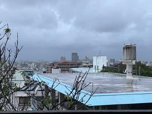

うるがいの話 ある日
最新: 付箋が二つもあった図書館の本【うるがいの話 ある日】とは 一日だけのプログです
『うるがいの話』の最新一日だけのプログで、通信料が少なく経済的だ。カニの画像をクリックすると全ての日付が載る『うるがいの話』サイトを表示します
|
|
【うるがいの話】 うるがい(ｳﾙｶﾞｲ urugai)とは、『もずくがに』の名前でとても大きくなります。 |
|---|---|
|
|
【カミマヤーの話】 猫のことを方言でマヤーといいます。カミマヤー（kamimayaa）とは、神の猫のことです。 |
|
【たながぁの音楽】 たながぁ（ﾀﾅｶﾞｰ tanagaa）とは手長えびのことで、何種類かあり大きいのは車 エビぐらいになります。 |

|
【ぶながぁの話】 ぶながぁ(ﾌﾞﾅｶﾞｰ bunagaa)とは、赤い髪の毛、赤い身体、そして身長は１ｍ２０ｃｍ ぐらい、川の蟹を食べているの目撃された。場所は沖縄県国頭郡大宜味村のと ある村僕の隣近所に住んでいる爺さんから、聞いた話です。 |
|
|
【ギーマの話】 ギーマ(giima)とは、山原の里山に咲くスズランに似た、 花を付けます。実は食べられます、 気が付くと口の周りが紫になっています。 |
2025年12月26日 (金）付箋が二つもあった図書館の本
15:45

『ホースが壊れた弁償は』と定員さんが、あ結構です、部品の経
年劣化も考えられるのでと、弁償の費用は発生しなかった。ホッ
。そうそう、以前に高圧洗浄を借りたお店は糸満市にある『ニッ
シン楽働館』だった、私は前と同じ楽働館で借りようとネットで
調べていたのだが、近くのメイクマンでレンタルしているとヨメ
が教えた。もし、糸満市に言っていたら・・・・・・・・・・・。
小杉健治さんの時代小説が面白かったので、図書館の検索一覧か
ら、新たな本を借りた。なんと、前の人の付箋が二つもあった。
マ、図書館の本だから・・・。で、本の内容の話ですが、この作
家が若い時の作品なのか、小説でした。それも、２０００年問題
がある、今の若い人は知らないでしょうが。懐かしい内容ので載
せることにした。
『それぞれの断崖』小杉 健治∥著 より
「大丈夫、何とかなるわ。今の仕事、結構いいお金になるのよ。
西暦２０００年の修正をやって いるのだけど」コンピューター
は西暦を示すのに下二桁で処理していた。１９９８年なら「９８」
と記憶する。印字するとき、１９を頭に付加する。だが、西暦２
０００年にはコンピューターの内部記憶は「００」となり、日数
を計算する際に狂うことになる。ほとんどのシステムがこの二桁
で記憶しており、その手直し作業に莫大な時間と労力が必要とな
る。
私たちが開発したシステムも二桁だった。２０００年は遠い先だ
と思っていたのに、つい目の前に迫ってきた。しかも、プログラ
ムは現在ではあまり使われていない言語で作られており、それを
知っている人間が少ない。その上、このような作業は技術の蓄積
にはならない。ソフトウェア会社が若手を使ってやっても何のプ
ラスにもならない。そこで、昔のプログラマーで現役を引退した
主婦などを呼び集めているのだ。
今年は、昭和１００年である。同じく、昭和２桁から３桁、平成
令和と年号のこともありました。なつかしい